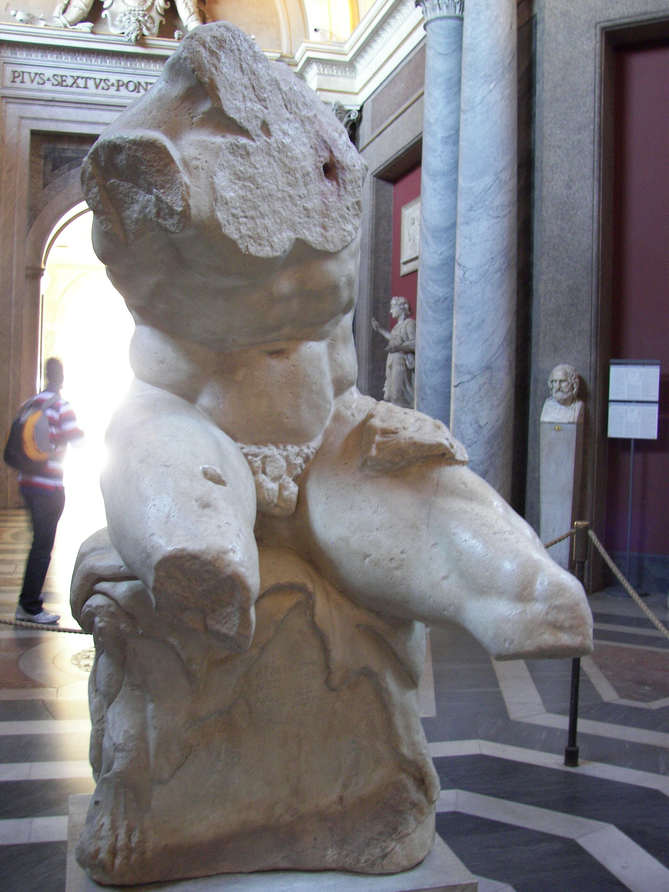

Подойдет ли новичку?
Да. Система строится от базовых принципов: техника, режим, питание и постепенная нагрузка.
Quaestiones
Коротко о том, кому подойдет курс, что нужно для начала и как строится работа.

Да. Система строится от базовых принципов: техника, режим, питание и постепенная нагрузка.
Лучший результат будет с залом, но стартовую структуру можно адаптировать под доступный инвентарь.
Нет. Рацион должен быть рабочим, а не наказанием. Цель — стабильность и результат.
Первые изменения обычно появляются через недели, но настоящая форма строится месяцами.
Next